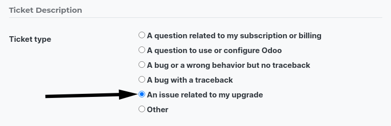
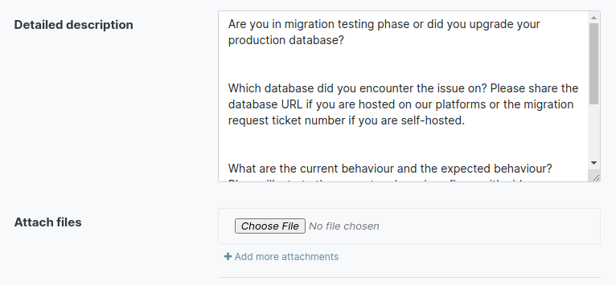
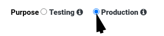
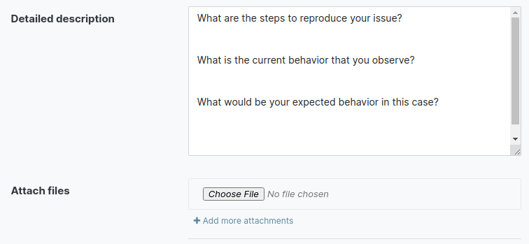

Overview
The upgrade process
This documentation is for our On-Premise (self-hosted) and Ibel.sh customers. If you are hosted Online, please check our instruction page for our Online (SaaS) customers.
Definition
An upgrade is switching to a newer version of Ibel (e.g., Ibel 13.0 to Ibel 14.0)
An upgrade does not cover:
- changing Editions (i.e., Community to Enterprise edition)
- switching hosting type (i.e., On-Premise to Online or Ibel.sh)
- migration from another ERP to Ibel
Note
If you need Ibel assistance on this matter, please contact your Ibel Account Manager or contact our Sales department.
Process workflow
The upgrade process in a nutshell:
- You create a test upgrade request.
- The request is processed by Ibel:This happens via an automated process that runs the database through an upgrade script and takes between 20 and 120 minutes. Only if an issue(s) arises will we have to intervene manually and adjust the script specifically to your database until the upgrade succeeds.
- Ibel delivers a test database.
- You test your database for possible discrepancies (see Test guidance)
- If there are any discrepancies, you report them to the Upgrade support team via the Help portal.
- We will fix the issues and send you a new test database.
- Once you completed the testing and are happy with the result, you decide on a date and time when you stop users from accessing Ibel, freeze all data entries and create an upgrade request for the production upgrade.
- Ibel delivers the production database through the automated process.
- You restore it in your Production environment a few short hours later and continue working on the newly upgraded database.
Service Level Agreement
What is covered by the Enterprise Licence?
Databases hosted on Ibel’s Cloud platforms (Saas and Ibel.sh) or On-Premise (Self-Hosting) enjoy the following service at all times.
The upgrade of:
- standard applications
- Studio customization (as long as the Studio app is still active)
- customizations done by our consulting and developer services if they are covered by a ‘Maintenance of Customisations’ subscription
The Upgrade Service is limited to the technical conversion and adaptation of your database (standard modules and data) to make it compatible with the targeted version.
What upgrading does NOT cover
- The cleaning of pre-existing data & configuration while upgrading
- Any new developments and/or upgrade of your own custom modules
- Training on the new version
You can get more information about your Enterprise Licence on our Ibel Enterprise Subscription Agreement page.
Note
If you need Ibel assistance on this matter, please contact your Ibel Account Manager or contact our Sales department.
Get started
The upgrade process varies depending on where your database is hosted.
Online (SaaS)
If you are hosted Online, please check our instruction page for our Online (SaaS) customers.
Ibel.sh
If you are Ibel.sh hosted, check our specific instructions to be able to upgrade.
On-Premise
There are two possibilities:
- Via the interface of our website form
- For technically-advanced users and partners, via the following command line (to be used on the machine where your database is hosted):
python <(curl -s beta.upgrade.odoo.com/upgrade) test -d <your db name> -t 14.0 -c <your subscription code>
What does it do?
The above command will dump your database to a file, then send it to the upgrade platform for upgrade, displaying you the live logs, then restore the upgraded database back on your server as a duplicate test database.
Steps
The testing phase
Test process
Also referred to as the pre-production phase, the test phase allows you to review an upgraded version of your database without affecting your production database in any way.
We suggest that you run the test upgrade process at least once, but you can do it as often as you want (one at a time).
Once you receive your upgraded test database, you should check that all data, processes and functionality are still correct and working as expected.
If you do find discrepancies, you’ll be able to:
- and/or
- Ask for a new test request after the reported issues have been fixed in the upgrade script.
When you do not find any discrepancies, you’ll be able to:
- Move on to the upgrade of your production database.
Request a test database
When filling the website form, select Testing purpose.

Test guidance
Every business and organization has its own operational needs and will have to test its specific Ibel instance respectively. However, we recommend you look at the test scenario we created, a high-level idea of what you should test and look out for.
Assistance
If you encounter issues or problems in the test database, please contact the Ibel Upgrade Support:
- Connect to our Ibel Support page.
Under the Ticket Description section, select An issue related to my upgrade ticket type.
Warning
If you choose another Ticket Description type, the request will be redirected to another team than the upgrade one and will slow down the processing and response time.
Please provide as much detail as you can. Where applicable, illustrate the current and previous flows with videos and/or screenshots. This will avoid clarifying questions and speed up the resolution process significantly.

Note
- The purpose of the test phase is not to correct existing data or configurations in your database.
- If you need Ibel assistance on this matter, please contact your Ibel Account Manager or contact our Sales department.
The production launch
Production goes live
The production upgrade request is when you decide to upgrade your current database with all your production data (invoices, VAT returns, inventories, current orders) to a new version of your choice.
After your tests are completed to your satisfaction, submit the request to upgrade your production database via our website form. Select Production purpose.
Danger
Going into production without first testing may lead to:
- business interruptions (e.g. no longer having the possibility to validate an action)
- poor customer experiences (e.g. an eCommerce website that does not work correctly)
Assistance
If you encounter issues or problems in the production database, please contact the Ibel Upgrade Support:
- Connect to our Ibel Support page.
Under the Ticket Description section, select An issue related to my upgrade ticket type. Under the Ticket Description section, select the appropriate type related to your issue but do not select the option An issue related to my upgrade.
Note
After upgrading to production, the support will be provided by the Support team instead of the Upgrade team.
Please provide as much detail as you can. Where applicable, illustrate the current and previous flows with videos and/or screenshots. This will avoid clarifying questions and speed up the resolution process significantly.
Warning
If you choose another Ticket Description type, the request will be redirected to another team than the upgrade one and will slow down the processing and response time.
FAQ
Why upgrade?
- You benefit from the latest features of the new major version released by Ibel.
- If you are in an unsupported version, you get a new version with support.
When to upgrade?
Whenever you want. You can make your upgrade request as soon as a new version is released on our website form.
Availability of the new version
Please kindly note that as soon as we announce the release of a new major version (usually at the end of year), the Upgrade Service team needs to adapt the upgrade scripts to it, which is why the new version is not immediately available for existing databases.
Finalization of the upgrade (ETA)
Unfortunately, it is impossible to give time estimates for every upgrade request. Ibel offers so many possibilities (e.g. branding, workflows, customization, etc) that it can get tricky to upgrade, and translate to the new structure. If you use multiple apps managing sensitive data (e.g., Accounting, Inventory, etc.), some cases may still require a human intervention, making the process slower.
This is especially true during the first months following the release of a new major version, which can significantly lengthen the upgrade delay.
In general, the ‘smaller’ the database, the quickest the upgrade. A single-user database that uses only CRM will be processed faster than a multi-company, multi-user database that uses Accounting, Sales, Purchase, and Manufacturing.
So, in a nutshell, what can impact your upgrade lead time?
- Source & targeted versions
- Installed apps
- Volume of data
- Amount of customization (models, fields, methods, workflows, reports, website, etc.)
- Installation of new apps or configuration changes after the start of the test phase
Usually, the delays experienced during the first request (waiting time between the time you submitted your first request for a test upgrade) can generally give you an idea of the time to wait for the production request.
Upgrade of the custom modules
As stated in our Ibel Enterprise Subscription Agreement, section 5.1 Standard charges, this optional service is subject to additional fees.
If you have a custom code, you can choose to have it upgraded by our services, by one of our partners or you can do it yourself.
Note
If you need Ibel assistance on this matter, please contact your Ibel Account Manager or contact our Sales department.
Editions change (from Community to Enterprise)
An upgrade does not cover a change of Editions
Note
If you need Ibel assistance on this matter, please contact your Ibel Account Manager or contact our Sales department.
Switching the hosting types (Self-hosted vs Online vs Ibel.sh)
An upgrade does not cover a change of Hosting types.
Open the following link to get more information about how to change your hosting type.
Note
If you need Ibel assistance on this matter, please contact your Ibel Account Manager or contact our Sales department.
Release Notes by version
Open our Release Note page to get a summary of the new features and improvements made in each version.
Assistance
Contact our Upgrade service support
Should you have any more questions about the upgrade, do not hesitate to send a message to Ibel Upgrade Team. We will be very pleased to answer it as soon as possible.
Supported versions
Please note that Ibel provides support and bug fixing only for the three last major versions of Ibel.
This is a factor to take into consideration before upgrading. If you are on an older version, we suggest you to prefer the most recent version to benefit from a longer support (before having to upgrade again).
You can get more information about our supported versions.